Week 8¶
Liouville Operator And Liouville Equation¶
Instead of writing Poisson bracket as an bracket, we can define a Poisson bracket operator:
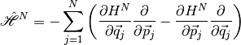
More generally, we can define an Liouville operator, which is
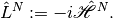
Now the Liouville equation becomes
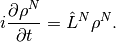
For stationary state we have
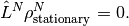
BBGKY Hierarchy¶
Now we think about the problems we are going to solve. In statistical mechanics, the most ideal method is to solve the Liouville equation directly and leave only initial condition missing for the problem. However, solving the Liouville equation is so hard for complicated problems we finally thinking about dropping some dynamics. This is no big deal as we already dropped initial condition and makes our solution probabilistic.
Now the question is what to drop. For non-interacting systems, the solution comes directly from Liouville equation. It’s interactions that makes our life so hard (yet make us alive). So we would like to make approximations on interactions.
For non-interacting systems,  space can actually be reduced to
space can actually be reduced to  space which is spanned by the freedoms of only one particle. Here we need to address the fact that we are dealing with identical particles.
space which is spanned by the freedoms of only one particle. Here we need to address the fact that we are dealing with identical particles.
Actually we are not trying to reduce to space exactly. We just want to make the dimension as less as possible. So we want to talk about some reduced quantities.
First of all is the probability density of s particles. For one particle, it’s
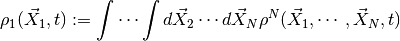
Similarly, we can define s particles probability density, [1]
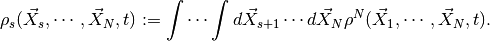
We define a new quantity, which has a weight, as
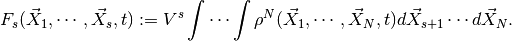
Obviously, 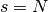 gives us
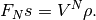
We can write down the Hamiltonian of the system for any two-body spherically symmetric interaction,
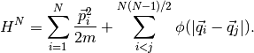
Recall that Liouville equation reads
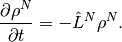
Now we have

where
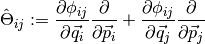
Next write down the explicit Liouville equation for this problem and integrate over 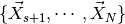. Make approximations (large N etc), finally we have a hierarchy,
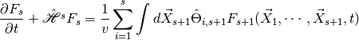
where 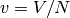.
This shows exactly why stat mech is hard. The smaller s is, the easier the solution. BUT we see that to find out 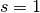, we need 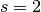 and the hierarchy never cut. What do we do? We cut manually.
Why Irreversible¶
The reason that a system is irreversible is because we lost information. In other words, the correlation function of time is shorter as the any system would be coupled to the reservoir. So any system would transfer information to the reservoir and the information just runs aways deep into the reservoir. With information loss the system can not be reversible. More quantum mechanically, the system loses information throught entanglement (mostly).
The classical idea of irreversibility is through H theorem. Boltzmann defines a quantity
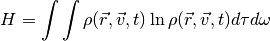
where 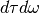 is the infinitesemal volume in space, 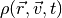 is the probability density.
Boltzmann proved that this quantity can not decrease using Boltzmann equation.
This result shows the statistical mechanics view of the second law of thermodynamics, which says that adiabatic process can never decrease the entropy of a system.
Road Map of Statistical Mechanics¶
As we said previously, the ideal situation is that we solve Liouville equation directly and exactly. However, it’s not generally possible. So we turn to some mesoscropic method for help.

We start from microscopic equation, work on them, them trucate at some point, meaning approximation. Then use the approximated result to calculate the marcoscopic quantities.
An example of this method is that we divide a box of gas into two parts. Then we talk about only two states which is LEFT state and RIGHT state instead of the phase space states.

Now we can write down two equations by intuition,
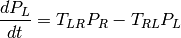
and
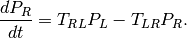
The first equation means that the change of probability that a particle in LEFT state is rate from RIGHT to LEFT time the probability that the particle is in RIGHT state, minus the rate from LEFT state to RIGHT state times the probability that the particle is in LEFT state. This is just simply an linear model of gaining and losing.
It becomes interesting that we can discribe the system in such an easy way. Will it work? We’ll see.
More generally, we have
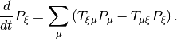
The important thing is that these equations are linear.
Now we can start form these equations instead of the Liouville equation to solve the problem. It’s called mesoscopic. The next thing is to connect these mesoscopic equations to the microscopic equations.
A Review of Boltzmann Equation & H Theorem¶
The objectives are
- Derive Boltzmann equation from classical scattering theory of rigid balls.
- Derive continuity equation from Boltzmann equation.
- Prove H theorem.
- Understand H theorem.
Boltzmann equation derivation¶
The idea is to find out an equation for one particle probability density 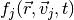 by considering the number of particles into this state and out of state due to collision. Since we can find all contributions to 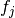 by applying scattering theory of classical particles, this equation can be written down explicitly which turns out to be an integrodifferential equation.
The number of particles in a volume 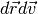 at position 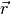 with velocity 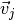 is
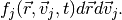
Consider the situation after a short time  we can write down the change of particle numbers due to collision and finally we will get Boltzmann equation.
we can write down the change of particle numbers due to collision and finally we will get Boltzmann equation.
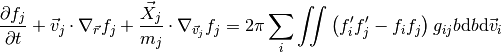
where 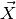 is the external force on the particle, prime denotes the quantity after collision,  is the impact parameter.
is the impact parameter.
In the derivation, the most important part is to identify the number of particles into and out of this state due to collision.
Boltzmann equation & Continuity Equation¶
We can derive from Boltzmann equation the Enskog’s equation then simplify to continuity equation by picking up an conserved quantity as  in Enskog’s equation.
in Enskog’s equation.
Continuity equation is alway true for such an conserved system so this results is very conceivable.
H Theorem¶
H theorem says that the quantity  can not decrease. The requirements of course should be that in a classical, particle number conserved system.
can not decrease. The requirements of course should be that in a classical, particle number conserved system.
First define
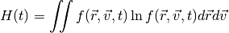
Use Boltzmann equation we find out that
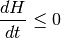
in which equal sign is valid if&f
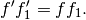
H Theorem Discussion¶
There were two objections on H theorem.
- Loschmidt: All collisions can be reversed in the view of classical mechanics;
- Zermelo: Poincare recursion theorem says an equilibrium system can go back to inequilibrium.
To Loschmidt’s questioning, Boltzmann pointed out that H theorem is a statistical theorem rather than mechanics theorem. Quantities in this theorem like  are statistical average not the quantity of exactly which particle.
are statistical average not the quantity of exactly which particle.
Zermelo’s objection is not valid because the recursion time is extremely long.
{kind=link}